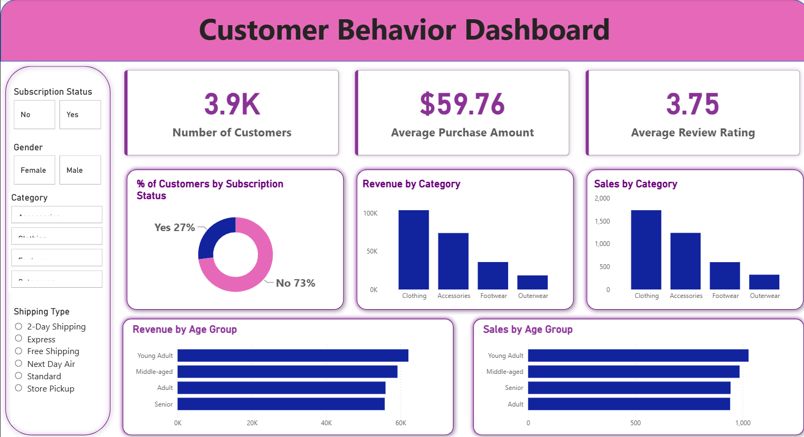
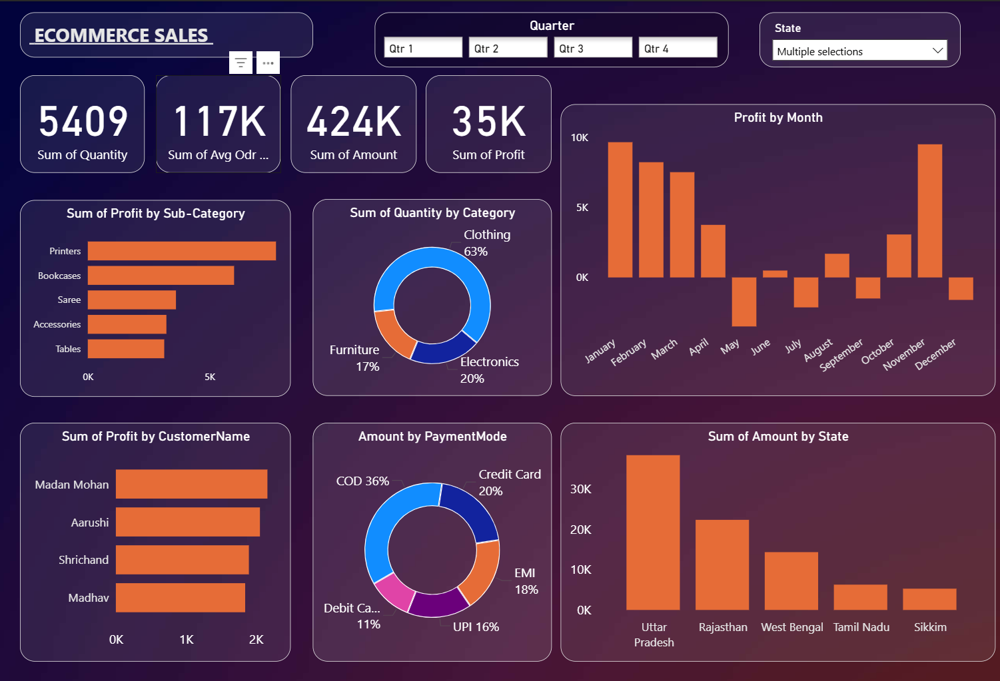

Data Analysis
Python · Pandas · NumPy · Statistics · EDA · Data Cleaning
OPEN TO DATA ANALYTICS OPPORTUNITIES
I work with data to uncover patterns, build useful dashboards, and communicate insights. My projects combine analytics, visualization, and machine learning.
Analytics · Visualization · ML
01 / ABOUT
I’m an aspiring data professional with an academic background in bioinformatics and a growing portfolio in data analytics and machine learning.
I enjoy cleaning and exploring datasets, finding meaningful patterns, and presenting results in a way people can act on. I’m developing practical skills across Python, SQL, Excel, and Power BI through hands-on projects.
02 / TOOLKIT
Tools used across my learning and project work.
Python · Pandas · NumPy · Statistics · EDA · Data Cleaning
Power BI · DAX · Excel · Tableau · Matplotlib · Seaborn
SQL · MySQL · Jupyter Notebook · GitHub
Scikit-learn · Classification · Regression · Model Evaluation
Skill bars are visual design elements, not formal proficiency ratings.
03 / SELECTED WORK
Hands-on projects exploring analytics, dashboards, and machine learning.
An analytics project focused on exploring customer behavior, identifying purchasing patterns, and generating insights to support data-driven business decisions.
View project on GitHub ↗A Power BI dashboard project focused on presenting e-commerce sales data through interactive visuals and business-friendly reporting.
View project on GitHub ↗A classification project exploring loan approval data, model training, and evaluation using machine learning techniques.
View project on GitHub ↗A research project using bacterial genomic sequence data and machine learning approaches to predict antimicrobial resistance labels.
Explore GitHub ↗A learning assistant project designed to respond to educational prompts, built with Python and language-processing components.
View project on GitHub ↗A transcriptomics workflow exploring quality control, alignment, read counting, and differential gene-expression analysis.
Explore GitHub ↗Project links point to the relevant repositories where available; other links open the GitHub profile until you add individual repository URLs.
04 / DASHBOARD SHOWCASE
Explore my analytics projects and business insights.

CUSTOMER ANALYTICS
Explore customer purchasing patterns and behavior insights.
View Full Dashboard ↗
BUSINESS INTELLIGENCE
Explore sales performance, revenue trends, and key metrics.
View Full Dashboard ↗04 / EDUCATION
Jamia Millia Islamia University
Jamia Hamdard University
05 / LET’S CONNECT
I’m open to entry-level data analytics opportunities, project collaboration, and professional conversations.